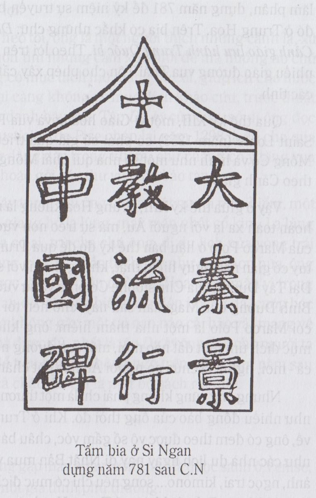
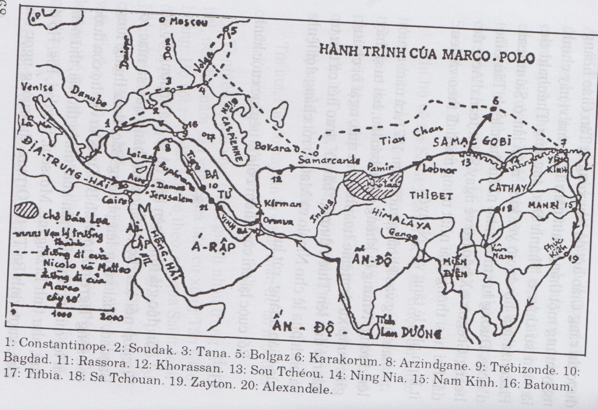

Theo các sử gia châu Âu thì tài liệu cổ nhất ghi trong sử về sự giao thông giữa châu Âu và Trung Hoa là một đoạn văn trong Hậu Hán Thư của Phạm Diệp viết vào thế kỷ thứ năm sau công nguyên. Đoạn văn đó nói rằng người La Mã bắt đầu đến Trung Hoa vào thời Linh Đế đời Đông Hán, thế kỷ thứ hai sau công nguyên, ở La Mã lúc đó là Hoàng đế Marc Aurèle. Họ đã đến mua lụa của Trung Hoa chứ không phải để tìm hiểu triết lý của Khổng giáo, Lão giáo, mà cũng không phải để truyền bá đạo Ki Tô; mà mỉa mai nhất là chính Hoàng đế Marc Aurèle, nổi tiếng là khắc kỷ lại tẩy chay thứ lụa của Trung Hoa, không chịu mua tặng bà vợ một tấm, cho nó là quá xa xỉ. Xa xỉ thật, vì hồi đó người ta không bán lụa mà chỉ đổi lụa, đổi lụa lấy vàng. Cứ một cân lụa đổi lấy một cân vàng.
Sử chép như vậy, chứ thật ra sự giao thông giữa châu Âu và Trung Hoa do con đường chở lụa, chắc phải có từ khi lụa Trung Hoa bắt đầu được các dân tộc Ấn Độ, Ba Tư biết đến, nghĩa là cách đây ít gì cũng ba, bốn ngàn năm vì các nhà khảo cổ đều nhận rằng người Trung Hoa đã biết trồng dâu nuôi tằm từ sáu, bảy ngàn năm nay.
Thời vua Linh Đế đó, người Ả Rập gọi Trung Hoa là Cine. Theo Paul Herrmann, tên Cine đó do tên Tchina mà các thủy thủ Ấn Độ dùng để chỉ nhà Tần. Nhà Tần đã thống nhất, mở mang Trung Quốc, cho nên các nước khác gọi Trung Quốc là Tần. Người Ả Rập đọc Tchina ra Cine, còn người Hi Lạp đọc là Sinai. Người Hi Lạp còn gọi người Trung Hoa là Serien, do chữ Hi Lạp Sericon là lụa, mà chữ Sericon do chữ ti quyến của Trung Hoa nghĩa là tơ lụa. Sau người Ả Rập còn phân biệt Nam Trung Hoa mà họ gọi là Cine với Bắc Trung Hoa mà họ gọi là Cathai. Có lẽ chữ Cathai do một tiếng Mông Cổ, chỉ tên một giống rợ, rợ Kitai đã xâm chiếm Trung Hoa trong thời Trung Cổ. Gần đây người Nga vẫn còn gọi Trung Hoa là Kitai.
Tới đời Đường Thái Tôn (626-649), một phái trong giáo Cơ đốc, phái Nestorien người Trung Hoa gọi là Cảnh giáo, do Ba Tư mà truyền vào Trung Quốc khá mạnh.
Năm 1625, người ta đào được ở Si Ngan(1) một tấm bia cao hai thước rưỡi, dày hai mươi lăm phân, dựng năm 781 để kỷ niệm sự truyền bá phái đó ở Trung Hoa. Trên bia có khắc những chữ: Đại Tần Cảnh giáo lưu hành Trung Quốc bi. Theo lời trên bia thì nhiều giáo đường vua Thái Tôn cho phép xây cất trong các tỉnh.

Qua thế kỷ XIII, một vị Giáo Hoàng và vua Pháp là Saint-Louis (năm 1253) có phái sứ giả qua triều đình Mông Cổ và hình như một số nhà quí phái Mông Cổ đã theo Cảnh giáo.
Vậy ở giữa thế kỷ XIII, Trung Hoa không là một xứ hoàn toàn xa lạ với người Âu, mà sự trèo non vượt biển của Marco Polo ở hậu bán thế kỷ đó để qua Trung Hoa tuy có gian nan nguy hiểm thật, không thể ví với sự vượt Đại Tây Dương của Christophe Colomb và sự vượt Thái Bình Dương của Magellan sau này: cho nên tôi không coi Marco Polo là một nhà thám hiểm: ông không có mục đích tìm đất nào mới, một con đường nào mới cả – mới, nghĩa là chưa có người Âu nào đặt chân tới.
Nhưng ông cũng không phải chỉ là một thương nhân như nhiều đồng bào của ông thời đó. Khi ở Trung Hoa về, ông có đem theo được vô số gấm vóc, châu báu cũng như các nhà du lịch ngày nay đi Nhật Bản mua về máy ảnh, ngọc trai, kimono… song nếu chỉ có mục đích buôn bán thì Marco Polo đã không ở Trung Hoa hai mươi sáu năm mà đã đi đi về về nhiều chuyến để kiếm cho được nhiều lợi.
Theo tôi, ông là một người thích những cảnh lạ, xứ lạ, muốn tìm những cảm xúc mới để mà hưởng nó chứ không có mục đích mở mang bờ cõi, giúp ích cho nước nhà, lại càng không có mục đích khảo cứu, trước thuật để lưu danh hậu thế. Tập Du ký của ông, sở dĩ ông đọc cho Rusticien de Pise chép lại năm 1298 là để cho qua thì giờ dằng dặc trong khám, chứ chẳng có ý tặng vua chúa, hoặc gởi các thư viện để bảo tàng.
Vậy trước sau ông chỉ là một người mạo hiểm, một khách giang hồ lạ lùng, may mắn nhất cổ kim. Lạ lùng vì chưa có ai, trừ cha chú ông, đi du lịch nửa vòng trái đất trong già một phần tư thế kỷ như ông, hơn nữa, ông còn được làm đại thần ở Trung Hoa. May mắn vì trong thời gian đó trải qua biết bao miền hoang dã, cướp bóc mà ông không gặp một tai nạn nào cả, bảo vật mang về quê nhà được đủ, nhất là tập Du ký ông đọc cho người ta chép để tiêu khiển, không ngờ trên năm trăm năm sau được cả châu Âu coi là một bộ sách rất quý.
Ông gặp may mắn từ hồi nhỏ là được sanh ở Venise, trong một gia đình phú thương.
Hồi mới đầu, Venise chỉ là một làng chài lưới không có gì đặc biệt.Sau nhờ địa thế, nơi đó thành một trung tâm thương mại quan trọng là đầu mối liên lạc giữa Trung Âu và ĐôngÂu.
Tới khi có những cuộc thánh chiến của Thập tự quân, tỉnh Venise phát triển mạnh mẽ, có những đội thương thuyền lớn đi khắp Địa Trung Hải, giao thiệp với các thương nhân tứ xứ: từ Nga tới Ai Cập, từ Ba Tư tới Ấn Độ. Giữa thế kỷ XIII, Venise đương lúc toàn thịnh, lâu đài mọc lên rất nhiều ngay mặt nước, suốt ngày ghe tàu vào tấp nập. Người Venise làm chủ được nhiều đảo trong Địa Trung Hải và vài địa điểm quan trọng như Constantinople. Tất cả sự buôn bán giữa châu Âu và châu Á đều qua tay họ, và họ thường giao thiệp với các thương nhân Mông Cổ.
Marco Polo sanh năm 1254.Tổ tiên ông mấy đời chuyên nghề buôn bán với ngoại quốc, có một cửa hàng ở Constantinople và một cửa hàng nữa ở Crimée. Thân phụ ông là Nicolo Polo và một người chú hay bác ông tên là Matteo Polo, muốn mau làm giàu, năm 1255 rủ nhau đi một chuyến lên Hắc Hải tới Sarai và Bolgar, trên sông Volga để đổi hàng với một vị chúa Mông Cổ tên là Barka.
Họ tới nơi được, nhưng trở về không được, vì chiến tranh thình lình xảy ra giữa Barka và một chúa Mông Cổ khác.Nghẽn đường về Tây, họ đành tiến qua Đông Nam, tới Bokhara gặp một phái bộ sứ thần đi vềTrung Hoa.Họ trổ tài ngoại giao để xin đi theo. Phái bộ bằng lòng. Thế là họ được Đông du một chuyến, chẳng những khỏi lo bị cướp bóc dọc đường, mà tới đâu cũng được thổ quan tiếp đón long trọng, vì ta nhớ rằng hồi đó khắp một vùng từ Trung Hoa đến Ba Tư, Nga đều ở dưới sự đô hộ của Mông Cổ.
Họ đi hơn một năm thì tới Cambalik (Yên Kinh), vào yết kiến Nguyên Thế tổ Hốt Tất Liệt (Koubilai Khan).Họ thạo tiếng Thát-Đát (Tartare) tâu với vua Nguyên về tình hình, phong tục, chính trị các nước châu Âu, nhất là về Giáo hoàng và giáo đường.
Năm 1265, vua Nguyên sai một vị đại thần theo họ qua châu Âu, dâng một bức thư lên Giáo hoàng tỏ tình thân thiện và xin Giáo hoàng gửi qua Trung Hoa một trăm tu sĩ học rộng để tranh biện với nhà nho Trung Quốc xem «đạo Thiên Chúa có thực là một đạo cao đẹp hơn cả những đạo ở Trung Hoa không». Vua Nguyên cho họ một thẻ bằng vàng, đi tới đâu cứ việc trình ra là được thổ quan tiếp đón long trọng, và dặn họ khi trở lại Trung Quốc nhớ mang theo một chút dầu thánh đốt ở đền Jérusalem.
Họ bèn lên đường, nhưng rồi vị đại thần Mông Cổ đau, phải ở lại một nơi dưỡng sức, chỉ còn Nicolovà Matteo tiếp tục đi. Lại hơn bảy năm sau, họ mới tới châu Âu.Kể ra họ cũng hơi la cà. Vốn là thương nhân mà được cơ hội du lịch như những vị sứ thần của một đại cường quốc, thì thế nào họ chẳng lợi dụng cái thẻ vàng của vua Nguyên cho để quan sát mọi nơi, nhất là những tỉnh buôn bán sầm uất, làm quen với các nhà cầm quyền, các phú thương, và để mua những ngọc quý ở Samarcande, Tabriz?
Khi họ về tới Saint-Jean d’Acre thì được tin Giáo hoàng đã từ trần. Họ vô yết kiến sứ thần của Giáo hoàng, trình bức thư của Nguyễn Thế tổ. Vị sứ thần bảo họ phải đợi khi nào bầu cử xong vị Giáo hoàng mới rồi sẽ quyết định.Trong khi chờ đợi, họ về thăm nhà ở Venise, sau khi xa quê mười bốn năm.
Tới nơi, Nicolo hay tin là vợ đã mất, để lại một đứa con trai mười lăm tuổi, tên là Marco Polo.
Vì nhiều sự lộn xộn, tranh giành nhau trong Giáo hội, nên hai năm sau vẫn chưa bầu cử xong Tân Giáo hoàng. Họ sốt ruột dắt Marco theo, rồi qua Saint-Jean d’Acre, yết kiến sứ thần của Giáo hoàng, xin phép lại Jérusalem lấy một ít dầu thánh. Rồi họ xin phép đi ngay qua Trung Hoa kẻo trễ quá. Viên sứ thần bằng lòng, viết cho họ một bức thư gởi lên vua Nguyên để xin lỗi không thể làm theo như lời dặn vì lẽ chức Giáo hoàng còn khuyết.
Họ bèn vượt biển tới Lajas, nhưng mới tới nơi thì được tin rằng Giáo hội đã bầu xong vị Tân Giáo hoàng ngày mùng một tháng chín năm 1271, mà vị này chính là viên sứ thần ở Thánh địa, tức ông Théobald de Piacenza mà họ đã vô yết kiến mấy lần ở Saint-Jean d’Acre. Đương lúc mừng, họ nhận được lệnh Tân Giáo hoàng Grégoire X bảo trở về ngay Saint-Jean d’Acre để dắt hai tu sĩ thông thái nhất trong miền đi theo và đem ít bình pha lê tặng vua Nguyên.
Sau cùng vào khoảng cuối năm 1271, cả năm người lên đường. Nhưng đi không được bao lâu, hai tu sĩ thấy giặc cướp xứ Arménie hoành hành quá, ngại bị chúng bắt rồi đưa lên Thiên đường «bất tử», trao hết cả thư từ và bình pha lê cho Nicolo và Matteo rồi chẳng đợi lệnh của Giáo hoàng, rút lui.
Rốt cuộc lại chỉ còn nhóm Polo là tiếp tục cuộc hành trình.
Xin độc giả nhìn trên bản đồ sẽ thấy đường họ đi. Vì cướp nổi lên, họ không dám băng qua sa mặc tới Bagdad, phải vòng lên phương Bắc, theo thung lũng con sống Tigre mà tới vịnh Ba Tư. Như vậy họ còn được cái lợi qua những tỉnh sản xuất nhiều thứ vải, thứ nệm quý, như tỉnh Erzingane, Mossoul, Bagdad, Kis. Họ đi ghe, vượt vịnh Ba Tư tới Ormuz, thị trường ngọc trai của miền Tây Á. Họ ghé mỗi nơi ít ngày, mua các bảo vật một phần để tặng vua Nguyên và các vị đại thần Trung Hoa, một phần để đổi chác kiếm lời.

Từ Ormuz, họ tiến lên phương Bắc, tới Kirman, Nichapour, những nơi có nhiều mỏ ngọc rực rỡ đủ màu. Từ Nichapour trở đi, họ mới theo con đường cũ, tức con đường chở lụa, qua dãy núi Pamir, xứ Khotan, tới SouTchéou ở trên vạn lý trường thành.
Nguyễn Thế tổ hay tin họ tới, cho một phái đoàn đi đón và sau cùng họ tới Kemeing-fou, nơi mà vua Nguyên đương nghỉ để tránh nắng. Lúc đó vào khoảng mùa hè năm 1275. Cũng như lần trước về châu Âu, họ đi mất trên ba năm.
Chú thích:
(1) Chúng tôi chưa tra được tên Hán tự.